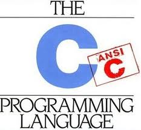
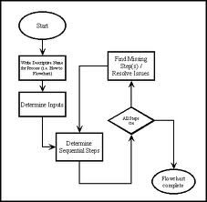

| C | CFG-O | CFG-E | CG-InP | CG-Inl | |
|---|---|---|---|---|---|
|  |  | t1.c: an example where the inter and intra-procedural analyses should return the same results. Our analysis needs some constants in the program code to narrow the intervals bound to each variable. If we do not have these constants, then there is not much that we can do. | |||
| t2.c: in this example the interprocedural analysis returns better results than the intra-procedural analysis. The interprocedural version can see that the function receives a constant as a parameter, and then it uses this information to find better intervals to the variables inside function foo. | |||||
| t3.c: in this case, like in the first example, the intra and inter-procedural analyses return the same results. The input argc comes from outside the program, we we must assume that its interval is [-inf, +inf]. | |||||
| t4.c: this test shows how we handle comparisons between different types. These comparisons are implemented via truncation by the compiler. We can use the results of the truncate instruction to improve the bounds of some variables. For instance, if we cast a char into an integer, then we know that the resulting integer is inside [-128, +127]. | |||||
| t5.c: a second case where the inter-procedural analysis should do better than the intra-procedural one. In this case, we have two constant arguments that the inter-procedural implementation can propagate to the body of function foo. | |||||
| t6.c: This program shows that a context-insensitive analysis loses precision. We get some sort of context-sensitivenss through function inlining. In the non-context-sensitive approach, we end up copying both parameters, 10 and 100 to the same variable N inside the function. The same happens with the parameters 0 and 30. In the context sensitive case, we have two N's, one for each call of the function. | |||||
| t7.c: a test case that shows how we handle a two-deep nested call. Again, the intra-procedural analysis is quite imprecise in this example. However, the inter-procedural implementation is able to propagate the known constant arguments inside the function bodies, even through multi-level function calls. | |||||
| t8.c: this file illustrates the fact that mutually recursive functions might create some very large SCC's in the inter-procedural analysis. We cannot improve our results in this example using context sensitiveness either. The mutually recursivefunctions cannot be completely inlined, so, in the end, we must still match formal and actual parameters to at least one function call. | |||||
| t10.c: this program illustrates a situation in which an one-iteration widening is imprecise. The benchmark has a SCC with two entry-points that are phis, and single iteration followed by widening leads to very conservative bounds. Furthermore, this example shows that, dependenting on the topological ordering we might get different results (but still correct results anyway). If we start propagating intervals through one of the phi's, then we find that the variables are [-inf, 1]. If we use the other, then we get [0, +inf]. If we do one iteration before widening, then we get the least-fixed point [0, 1]. |